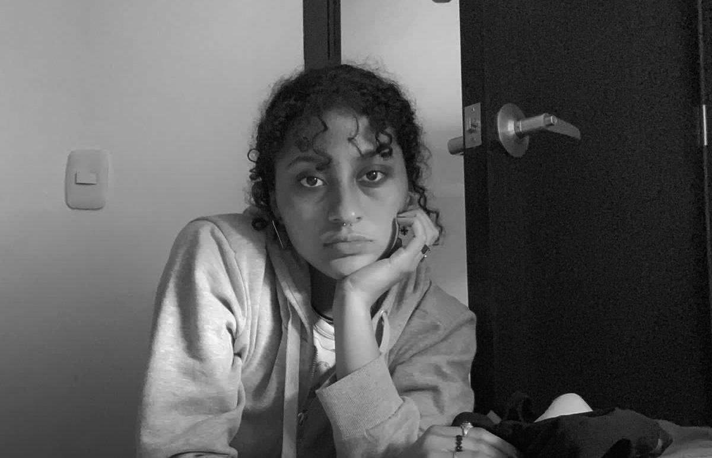

COMIENZA A TRENZAR ESTE CAMINo
Trenzidad se siente feliz de darte la bienvenida
Tejiendo CultuRa

Historia Negra
Las trenzas africanas son un legado cultural con más de 5,000 años de historia. Desde el Antiguo Egipto expandiéndose hasta las comunidades de África Occidental, cada estilo ha contado historias de identidad.

Afrocolombianidad
Durante la época de la esclavitud, las trenzas no solo eran un símbolo de identidad, fueron una herramienta de resistencia. Se usaban para trazar mapas de escape, asegurando la supervivencia de quienes soñaban con la libertad.
Más información

orgullo Actual
Hoy en día, las trenzas africanas son un símbolo de identidad y orgullo cultural. Más que un peinado, manteniendo viva la memoria de la resistencia y la belleza detrás de cada cabello trenzado que cuenta una historia.
Más información
NosotrAS

Ana Castillo
Diseñadora gráfica y creadora de ilustraciones con animación 3D.

Alejandra Mendoza
Diseñadora Gráfica UX/UI con enfoque en usabilidad en interfaces digitales.